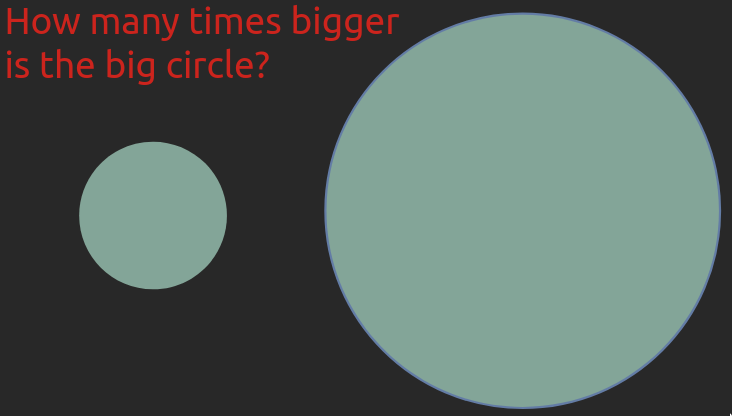
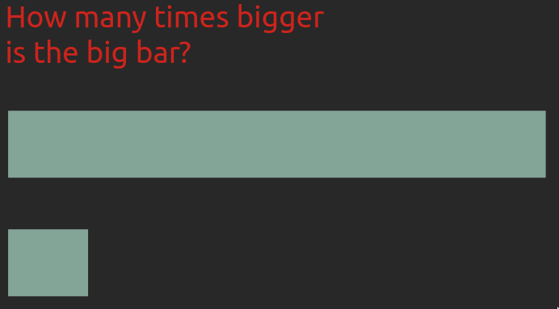
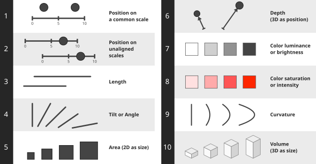

4 Magnitude
Choose effective visual channels for comparing quantitative magnitudes.
Explain why position and length are generally easier to compare than area, and why unnecessary 3D can mislead.
Evaluate how color and spatial representation affect the accuracy of visual interpretation.
4.1 Why bother?
In the last chapter, we saw how we could visualize magnitude as either the position of a point along an axis or as the brightness of the point’s color. We can refer to these different ways of representing a quantity graphically as visual “channels”. There are many more visual channels than position and brightness, and when we visualize something, we want to think about which are the most effective channels that we can use to understand the data.
As in many cases, an efficient way to learn this topic is through personal experience, rather than just being told the answer. So let’s experience how some visual channels are more effective than others through a short exercise.
Take a few seconds to answer the following question. How many times as large is the bigger object as the smaller one in each of these two images?


Remember that we learn more effectively when we actively try to answer questions like these instead of viewing the solution right away.
What do you think is meant by “bigger” when it comes to the circles? Are you supposed to compare the areas or the diameters?
The larger circle has seven times the area of the smaller circle, and the longer bar has seven times the length of the shorter bar.1

Most people find that it is much easier to compare the length and position of the bars aligned to the same baseline than to estimate the areas of the circles. For bars, it is also immediately clear what to compare as long as their widths are kept constant, whereas for the circles we might hesitate between area and diameter. This is important to keep in mind, especially when communicating to others via visualization, but also when creating plots for yourself.
Even if you aced both comparisons yourself, the fact that many people tend to get one of them wrong more often means that in order for you to create effective visualizations you need to know which visual channels are the easiest for humans to decode.
4.2 Visual channel effectiveness
There has been plenty of research trying to determine which visual channels are the most effective when communicating different aspects of a dataset. The findings from these studies provide us with a useful guiding foundation that we should only stray from with good reason. The main findings are summarized in the schematic below, from the most to the least effective visual channel.

What is regarded as visually salient might vary across cultures, geographic regions, and age groups. This is important to remember since much of this research has been carried out with college students in North America and Europe. More recent studies have shown that the chart’s purpose and the combination of visual channels affect which ways of depicting magnitude are most effective.2
Position along a common scale is generally the most effective visual channel for precise magnitude comparisons, so we should use it for our most important comparisons when possible. In a scatterplot, for example, position along the x- and y-axes represents two variables, but we can also use size or color to represent additional variables. Although it is harder to judge exact quantities from these channels (is this dot’s area exactly twice that of another?), they can still help us see trends in the data.
Unnecessary 3D makes plot interpretation harder
Three-dimensional plots are especially problematic when the extra dimension serves only as decoration, as in a 3D bar or pie chart. Even when depth represents data, as in a 3D scatterplot, positions can be difficult to compare. This is particularly challenging in a static image on paper, where the reader cannot rotate the plot to inspect it from different angles.
Which values do you think are represented by the bars A, B, C, and D in the 3D bar chart below?

Meaningful 3D can facilitate plot interpretation
Sometimes 3D can be useful, such as in a topographic map or a visualization of a protein’s structure. Below you can see examples created with the rayshader library that use 3D representations and camera rotation to help us interpret spatial relationships. The example on the right visualizes the curvature of spacetime via 3D position (depth), eliminating the need for the additional 2D plot shown in the example on the left.

But be cautious: we will see in the next section that even for systems such as blood vessels, which are naturally organized in three dimensions, it can be more mentally demanding to interpret a 3D visualization accurately. Claus Wilke has written a helpful chapter on this topic if you are interested in learning more.
4.3 Well-designed visualizations can support clinical decisions
The importance of these best practices might seem a bit abstract until you experience their effects yourself. Let’s look at a concrete example of how changing visualization methods improved performance on a medically relevant task.
Heart disease is the most common cause of death, killing almost 9 million people each year, or as many as diabetes, dementia, neonatal conditions, and respiratory infections combined. Low wall shear stress—the frictional force per unit area exerted by blood on an artery wall— is associated with the development of atherosclerosis. Identifying these regions can therefore help clinicians assess areas at risk.
To evaluate the shear stress in the arteries, one approach is to use a digital 3D representation of the artery colored according to the magnitude of shear stress, which is what you can see in the picture below. The colormap changes from blue for the areas of interest (low stress) to cyan, green, yellow, and red for higher stress.
In a 2011 study, Michelle Borkin and colleagues tested how effective this type of visualization was compared to alternatives using 2D representations and a diverging color scale.3 The experiment involved 21 Harvard medical students, who were asked to identify regions of low shear stress. When using the visualization you see below, they correctly identified an average of 39% of these regions. The illustrations below label the results with rounded percentages; the text reports the percentages shown in the paper’s Figure 7.

Changing the color scale almost doubled the accuracy
One comparison tested the effect of changing the color scale to one that is easier to interpret and makes the important areas of low shear stress stand out more, by highlighting them in bright red and showing the remaining areas in shades of gray. With this seemingly small modification, the percentage of low-shear-stress regions correctly identified almost doubled, from 39% to 71% for the 3D representations.
We will talk more about choosing appropriate color scales in later chapters.

Changing from 3D to 2D improved accuracy further
Another comparison tested changing from a 3D representation of the blood vessels to a 2D representation while using the diverging color scale. Although a 3D representation preserves more of the vessels’ anatomical geometry, it is also more cognitively demanding for us to process, and some areas can cover others so it is harder to get a quick overview of the vessels. In the 2D visualization, the blood vessels and their branching points are shown in a schematic that is less cognitively demanding to interpret. This representation was also shown to be more effective, as 91% of the low-shear-stress regions were correctly identified on average.
Overall, these two changes more than doubled the percentage of regions correctly identified, from 39% to 91%. That is a huge increase from modifications that might have seemed to be merely a matter of taste without knowledge of visualization theory! So, if anyone tells you that visualization of data is not as important as other components, you can tell them about this study and ask them what kind of visualization they want their doctor to look at when analyzing their arteries.

As with many things, there are situations where you can depart from these guidelines if you are sure about what you are doing and are trying to create a specific effect in your communication. But most of the time, it is best to adhere to the principles discussed above and we will dive deeper into some of them later in the book.
4.4 Original lecture slides
- Data Visualization: A Practical Introduction by Kieran Healy; from “Visual tasks and decoding graphs” until the end of the chapter.
These two examples are from Jeffrey Heer’s PyData talk. Heer is a visualization researcher at the University of Washington and a coauthor of the research papers introducing D3 and Vega-Lite.↩︎
Revisiting Channel Effectiveness: A Multi-Dimensional Evaluation with Primitive Visual Stimuli↩︎
Borkin et al. (2011), Evaluation of Artery Visualizations for Heart Disease Diagnosis, IEEE Transactions on Visualization and Computer Graphics, 17(12), 2479–2488. See Section 6.2 for the participants and Figure 7 for the percentages (open-access PDF). The study is also discussed around 1:02 in A Better Default Colormap for Matplotlib, SciPy 2015, by Nathaniel Smith and Stéfan van der Walt.↩︎